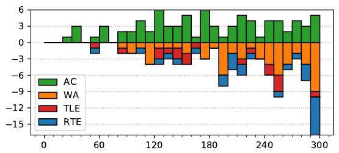

ACM ICPC World Finals 2019
Solved by 81 teams.
First solved after 28 minutes.
Shortest team solution: 1165 bytes.
Shortest judge solution: 1814 bytes.

The problem can be solved in linear time. The structure of this type of graph is well-known: a collection of rings with trees hanging off the vertices. Call a node a “ring node” if it is part of a ring, otherwise a “tree node”. We will solve the problem separately for ring nodes and tree nodes (identifying the rings in linear time is also a standard problem).
First we solve the problem for tree nodes. Since tree nodes can only be reached from their subtree, we can solve this independently for each tree rooted at a ring node (the answer we get for the root will be wrong since it ignores the ring, but we fix that later). Firstly, we can identify the kth ancestor of every node: during a recursive walk of the tree, keep a stack of ancestors, and look back k entries when visiting a node to find its kth ancestor (it might not exist if the node is too shallow). From these pointers one can trivially compute f i , the number of kth -level descendants of i, that is, those that can reach i in exactly k legs. We actually want gi , the number of descendants at most k legs away. But we can compute this recursively by summing gi over the children, subtracting the sum of f i over the children (which will be k + 1 legs away), and adding 1 for the node itself.
This ignores journeys from a node in one tree to a ring node other than the root. From each node, the reachable ring nodes form a contiguous arc of the ring. Thus, if we encode the number of such journeys to each ring node as a set of adjacent differences, we can update this structure in O(1) per source node.
The problem can also be solved using mergable heaps. For each vertex i, the program maintains a heap of nodes which can reach vertex i in k or less steps. The heap is sorted by distance from i to allow easy removal after incrementing the distances of vertices in the heap. By sweeping from the leaves of the “tree nodes” one can update the parent node by incrementing all values in the heap by 1 and then merging its heap with its parent’s heap. The merge can be done in O(log n) with a mergable heap (e.g., a leftist tree or a binomial heap) or in amortized O(log2 n) by merging the smaller heap into the larger one. After solving the trees, one can do the same calculation for the cycle. However, this approach overcounts nodes that traverse the entire cycle once before reaching vertex i. This can be resolved by spinning around the cycle a second time to calculate the overcounted nodes and removing them from the total. The resulting runtime is O(n log n) for mergable heaps and O(n log2 n) for a binary heap. Both solutions have a comparable empirical runtime to the linear time solution.